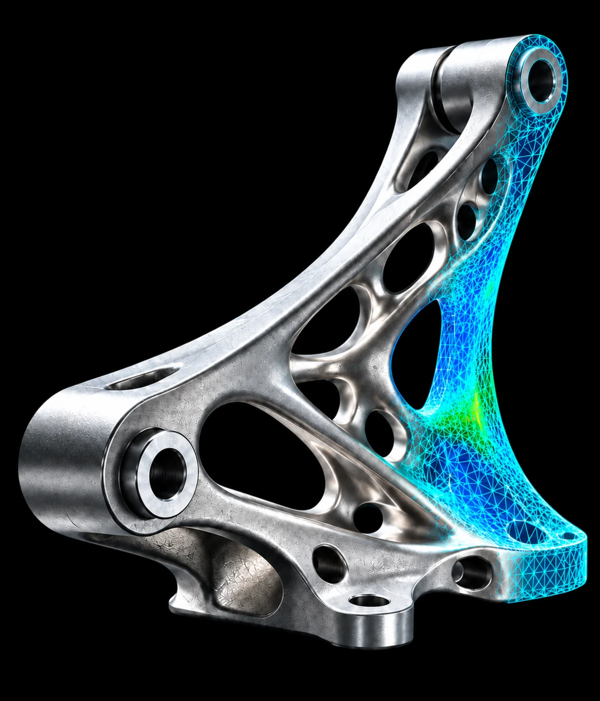
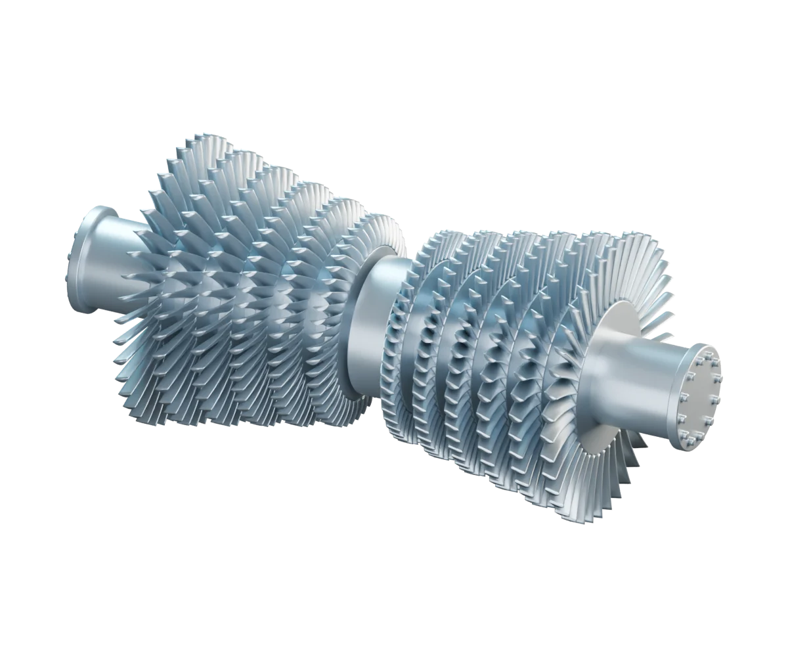

COMPUTATIONAL MECHANICS × AI
用仿真和 AI，研究结构与材料。
AgentFEM × GINO
同样承受 10 kN，支架还能减轻多少？调整尺寸，对比减重前后的变形。
MECHANICS MEETS INTELLIGENCE
AgentFEM × DENIM
先拉后压，和先压后拉，结果一样吗？改变加载过程，看看模型能否学会材料的“记忆”。

PHYSICS MEETS THE REAL WORLD
AgentFEM × Physics Twin
打开外缸，看看里面的叶片与转子。看看蒸汽怎样推动转子，带动机组运行。